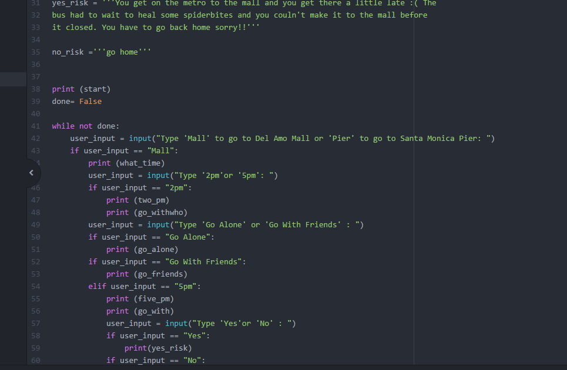

Some similarities between Python and Scratch are that they both use the similar operators, and require the same pseudocode. The differences are that the blocks of code aren't given to you and you have to have specific code syntax. Debugging my program was actually really fun! I don't know why, it kind of reminded me of a puzzle so I really enjoyed it and it wasn't that hard.
At Girls Who Code, I had the opportunity to take a field trip to Full Screen Media and view their building and meet their incredible staff.We were lucky enough to meet George Strompolos, the founder of FullScreen, and help improve their new FullScreen App. We were split into six groups of three and each group was paired with a mentor. My mentor was Vincent Seah who is a Principal Data Scientist at FullScreen. My group learned about the implicit and explicit data analyzed to provide crtical feedback for the FullScreen team. My group also came up with new ideas such as live options, notifications, and an improved social part for their app. We met some of their engineers and software developers for their app which was so exciting. I can't wait to see Full Screen become something amazing!
Today we used Python to create a text adventure game. My partner and I created a realistic trip to the pier and mall experience. We were able to change the outcome of the game by the user's input. We used conditionals and nested conditionals. Once again we tested our code through the command prompt on our computers. Insert code photo, terminal photo, and brainstorm photo.
Today we learned about data structures and how to create filters on pictures using Python. We learned about creating lists and I created a
random Haiku Generator using for loops and lists. We were also split into groups to discuss different types of tools in python.
My group got slicing lists. To slice a list you need to inclue [start: stop: increment] in your brackets. From the other groups,
I learned about the difference between list.append and list.extend. I also learned about tuples and how to search a list. Tuples
are used to store an infinite amount of data that can't be changed.We were paired with a partner and
worked on a program that found the sum of all the prime numbers on the list. Our final project was to create a filter that
could be placed on a picture. We did this by acessing specific items on a list and using multi-dimensional lists to store d
different types of data. Add picture of haiku, random number, obamicon.

I really enjoyed today's lesson! Today we got a taste of digital electronics. We started off lookng at different types of robots and defining what makes a robot one. Our class came up with the definition that robots haves to respond to iput(senses), have control schemes, and it should have a specific purpose. We researched different robots created such as Toymail, driverless cars, disability robots by Kavita Krishnaswamy, and drones. The second portion of our class was about circuits. We researched some of the main components which are Arduino board, Board of eEducation shield, breadboards, jumpwires, resistors, LEDs, servos, and piezos. We then broke off into groups to build our own circuit board. We created a series circuit with two LED lights. One of my favorite circuits we created was the series circuit with 2 LEDs and a button. I learned a lot about circuit today. We made so may mistakes such as putting a positive and negitive wire of a light in the same row. We also made the same mistake with resistors. I learned that the current can't pass through these wires when they are placed there. It was fun to work in a group and fail and grow together. My idea of robots changed today because many things can be considered robots depending on who you ask. I also learned that as great as robots are it can cause a lot of social and economic problems. Such as robots can take away jobs an worry about privacy. However, with any change comes a lot of pros and cons. I am excited for the future of robotics and that's part of the reason that I joined my VEX Robotics team. The chance to create new tech excites me! In addition to the great tech, we were able to hear a speaker named Lauren Wong. She actually did the Girls Who COde Internship one summer and is now going into college. It was great hearing from someone who has been in our shoes. She works with Social Media and Computer Science. She gave us great resources and tips for highschool and college which was really intrsting. Now she is going to be studying Communications and Computer Science. It was great to see how Girls Who Code offered so many opportunities for her. 
Today we were able to build circuits and program on Arduino boards to create a mini light show with the LEDs. My team programed an LED to turn on an off using Arduino C and control multiple LEDs using an array. We learned about the different variables in Arduino C such as pinMode, voidSetup, digitalWrite, delay, and more. First we programmed code to make out LEDs blink. Then, we researched a couple of AMAZING women in tech. Some of them include Ayanna Howard and Manuelo Veloso. The creative work that they have done in mechanical engineering, electrical engineering, and computer science is inspiring. Some of the robots that they have built sucha NASA robots, robo cup, and even a walking helping robot. Our teamwork could have improved because not everyone ws given the chance to have hands-on experience with the ciruits, but we will definitely improve next time. I learned from this group that you have to speak up when you have an idea nd be mindful that everyone in the group gets a good learning experience. From building circuits, I learned the difference between analog vs digital. We also was able to hear from an gret speaker named Sarah. She currently is VP of Mobile Experience at AT&T. She also worked as a presss relations manager, anaylist, and more. It was exciting to see how she applies tech to her field of expertise.